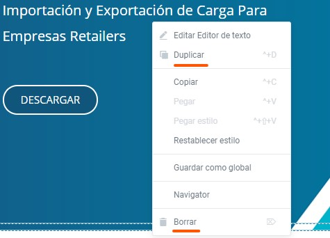

Tutoriales WordPress
Honducargo 2021
Haz click en las flechas para navegar por el tutorial.
üê≥
Listado de indice
- Ingresar al editor de WordPress
- Editar una página
- Opciones al publicar una página web
- Reemplazando una imagen
- Reemplazando enlaces de los botones
- Editar el menú principal
- Editar el footer
- Editar la galería de imágenes
- Editar la sección de Blog
- Editar los elementos de la barra lateral del Blog
- Editar la sección global del eBook y Contacto
- Editar el encabezado de las páginas de servicio
- Editar los formularios de Contacto & Cotizaciones
Navega hacía abajo para ver todo el contenido de un capitulo.
También puedes usar la tecla ESC.
Ingresar al editor de WordPress
Para ingresar al panel de control de Honducargo debemos ir a la página web: https://honducargo.com/wp-admin
Una vez allí, nos aparecerá una ventana que nos solicita usuario y contraseña.
Ingresamos las credenciales y hacemos clic en Acceder.
Si has logrado acceder con éxito, estarás dentro del panel de control de WordPress.
Aparecerán un par de alertas que debemos ignorar por el momento.
Ahora estamos listos para continuar aprendiendo.
üêü
Avanza a la siguiente sección
ó
Volver al listado de indice
Editar una página
Para editar una página nos dirigiremos al menú lateral izquierdo, y haremos clic en Todas las páginas.
Luego ubicamos el puntero sobre la página que deseemos editar, y hacemos clic en Editar con Elementor
Nos cargará la página con unas herramientas de edición, los cuales nos permitirán cambiar el texto fácilmente.
Herramientas de edición
Reemplazando un texto
Para cambiar un texto, hay varias formas de hacerlo.
- Ubicando el puntero encima de un texto, buscamos un pequeño lapiz azul y le hacemos clic. Al hacerlo, se desplegará una caja de texto en el panel izquierdo.
- Ubicando el cursor sobre el texto y cambiandolo directamente.
Se debe tener precaución al momento de cambiar los textos, ya que si cometemos un error y lo guardamos, sería irreversible. A continuación veremos como guardar.
Guardando los cambios
Cuando hayamos reemplazado el texto, debemos guardarlo antes de poder visualizarlo en la web.
Para ello vamos al panel lateral izquierdo, y hacemos clic en el botón verde que dice Actualizar.
Viendo los cambios
Una vez que se hayan actualizado los cambios, hacemos clic en el menú de hamburguesa y luego vamos a Ver Página.

¡Has aprendido algo nuevo!
üêü
Avanza a la siguiente sección
ó
Volver al listado de indice
Opciones al publicar una página web
Las páginas tienen distintos estados de visualización, ellos son:
- Publica: Visible para todos
- Privada: Solo visible para los administradores y editores del sitio.
- Protegida: Protegida con una contraseña que tú elijas.
Cambiando el estado de la página
Para hacer una página publica o privada, esto es lo que haremos:
- Volvemos nuevamente a Todas las páginas en el menú.
- En esta ocasión haremos clic en Editar
Nos cargará la página con una forma de edición diferente que veremos a continuación.
Herramientas de edición
Herramientas de edición
En esta ocasión, las herramientas de edición se nos presenta de una forma diferente. Esto se debe a que estas herramientas se encuentra en la parte trasera de la plataforma, mientras que las que observamos en un capitulo anterior, se encuentran en la parte frontal.
A esto también se le conoce como frontend y backend.
Para editar el estado de visualización de las páginas, necesitamos trabajar con las herramientas edición de backend.
En otras palabras, en el backend editamos las partes generales de las páginas, mientras que con Elementor o el frontend, editamos las partes visuales y de diseño.
Editando el estado de la página
En el panel lateral derecho tendremos distintas opciones. Las dos principales son Página y Bloque.
Hacemos clic en Página y luego en Estado y Visibilidad
Hacemos clic donde dice Visibilidad: Publica y lo cambiamos a Privada. Hacemos clic en el botón (azul en este caso) que dice Actualizar. Esto hará que nuestra web solo sea visible por los administradores del sitio.
.¡Eso fue todo!
üêü
Avanza a la siguiente sección
ó
Volver al listado de indice
Reemplazando una imagen
Para reemplazar una imagen, debemos ingresar a las páginas, y a Editar con Elementor.
Si no recuerdas como hacerlo, haz click aquí para verlo.
Una vez que estes en el editor, repetimos el proceso de hacer clic en el lapiz azul en el elemento que deseamos editar, para que nos aparezcan unas cajas de edición en el panel lateral izquierdo.
Hacemos clic sobre la imagen y se nos abrirá una ventana. Esta es la Biblioteca de Medios, allí podemos subir imágenes nuevas o utilizar las ya existentes.
Biblioteca de Medios
Para insertar una imagen, la seleccionamos y hacemos clic en Insertar medio.
Para subir una imagen, puedes simplemente arrastrarla desde tu carpeta de Windows, o bien, hacer clic en la pestaña Subir archivos, y desde allí buscar los archivos.
Se recomienda subir imagenes de poco tamaño, no mayor a 150kb
¡Sigue aprendiendo!
üêü
Avanza a la siguiente sección
ó
Volver al listado de indice
Reemplazando enlaces de los botones
Para reemplazar un enlace, debemos ingresar a las páginas, y a Editar con Elementor.
Si no recuerdas como hacerlo, haz click aquí para verlo.
Una vez que estes en el editor, repetimos el proceso de hacer clic en el lapiz azul en el elemento que deseamos editar, para que nos aparezcan unas cajas de edición en el panel lateral izquierdo.
Por ahora, hagamos clic en el botón de Ver todos los servicios.
Te aparecerán unas cajas de texto en la parte lateral izquierda. La caja que nos interesa editar, es donde dice Enlace.
Todo lo que debemos hacer es buscar el enlace al cual deseamos que redirija nuestro boton, y guardamos los cambios haciendo clic en Actualizar.
También podemos hacer clic en la ruedita que aparece en frente de Enlace para escoger si este enlace debe abrir en una nueva ventana.
Algunos botones no los podrás editar porque pertenecen a algo llamado Global Widget. Aprenderemos a editarlos más adelante!
¡Continua aprendiendo!
üêü
Avanza a la siguiente sección
ó
Volver al listado de indice
Editar la galería de imágenes
En la página de Inicio nos encontraremos con un carrusel de servicios con sus imágenes.
Veremos como reemplazar estas imagenes.
Accediendo a editar la página de Inicio
Debemos ingresar a Todas las páginas, y a Editar con Elementor.
Si no recuerdas como hacerlo, haz click aquí para verlo.
En esta ocasión editaremos la página de Inicio. También puedes buscarla desde el Buscador.
Otra forma de acceder a Editar con Elementor, es usando el atajo que se encuentra en la barra de herramientas de color negro, en la página principal.
Una vez allí, ubicamos el cursor sobre las imagenes para que nos aparezca el lapiz azul, y hacemos clic en él.
Se desplegarán las opciones en el panel lateral izquierdo. Veremos que aparecen las imágenes (8) en miniatura .
Hacemos clic sobre estas imágenes y se nos abrirá la galería.
Editando la galería
Para agregar más imágenes, podemos arrastrarlas desde una carpeta, o bien, haciendo clic en Añadir a la galería del panel lateral izquierdo.
Recuerda agregar un nombre para la imagen o servicio. También puedes editar los otros nombres.
Para eliminar una imagen, simplemente haces clic sobre la X.
Una vez tengas listos los cambios, hacemos clic en el botón Insertar galería y finalmente en Actualizar.
Una vez hayas actualizado, podrás ir a la página de Inicio, refrescarla y observar los cambios.
¡Vas por buen camino!
üêü
Avanza a la siguiente sección
ó
Volver al listado de indice
Editar la sección de Blog
El blog, o en este caso noticias, nos permiten compartir diferentes noticias. Cuando publicas una noticia, se agregan automáticamente en el siguiente enlace. Haz clic aquí para verlo.

Ingresando al Blog desde el panel
Para ingresar al blog, iremos al panel de control, luego haremos clic en Entradas > Todas las entradas.
En este menú también encontramos las Categorías, las cuales veremos pronto.
Panel de noticias o entradas
Una vez ingresamos a todas las entradas, veremos un panel con las noticias más recientes, y algunos datos como Autor, Categorías y Fecha de publicación.
En la parte superior, también disponemos de unos filtros para buscar noticias según la categoría o fecha de publicación, y de un buscador.
Editando una noticia
Para editar una noticia, ubicaremos el puntero encima de la noticia que deseamos modificar, y hacemos clic en Editar.
Se nos abrirá un editor de contenido, desde aquí será sencillo editar los textos, muy similar a un archivo de Word.
En el panel lateral derecho tenemos varias herramientas, en este caso solo usaremos dos: Categorías e Imagen destacada.

Como habrás podido intuir, las categorías nos permiten asignar las noticias a su respectiva categoría, de esta forma podremos mantenerlas organizadas.
La imagen destacada de cada noticia, aparecerá en la página de Noticias como imagen principal. Podrás reemplazar o eliminar la imagen de las noticias ya existentes.
Una vez finalices los cambios en el editor, debes hacer clic al botón Actualizar ubicado en la esquina superior derecha.
Creando una nueva noticia
Para crear una nueva noticia, volveremos a la opción de Todas las entradas, y buscaremos en la parte superior, el botón que dice Añadir nueva.
Se nos abrirá la siguiente ventana:
Aquí podemos agregar dos cosas de forma directa: El titulo y algunos párrafos.
El botón de Editar con Elementor lo ignoraremos en esta ocasión.
Si hacemos click en el + y después clic en Ver todos, se desplegarán unos bloques que nos permiten agregar diferentes tipos de contenido a nuestra noticia.
Al hacer clic en un bloque, lo añadirás a la entrada. Tomate un tiempo para experimentar con los bloques y mirar sus opciones.
La ventaja de esta forma de edición, es que es muy similar a Microsoft Word, pero con una interfaz diferente.
Para eliminar un bloque que hayas añadido, haz clic en los tres puntos que aparecen en sus opciones, y después haz clic en Eliminar bloque. También puedes oprimir Shift + Alt + Z
También puedes cambiar la posición de los bloques, haciendo clic en las flechas. Asegurate de ubicar el puntero encima de cada una de las opciones para entenderlas un poco.
Cuando termines de editar la noticia, haz clic en Publicar, éste boton aparece en vez de Actualizar cuando la entrada o página es nueva.
Esta acción hará que tu noticia se añada a la página Noticias y pueda ser visualizada por un usuario.
Similar a las opciones de publicar página, las Entradas también podremos hacerlas privadas o guardarlas como Borrador.
Editando las categorías
Las categorías nos permiten mantener organizadas nuestras noticias.
Para ingresar al panel de categorías, iremos al panel de control y ubicaremos el puntero en Entradas, y haremos clic en Categorías.
Se nos abrirá un panel similar al de Entradas, en el que podremos visualizar las categorías existentes, editarlas, crear nuevas, entre otras funciones.

Para editar una categoría, ubicamos el puntero encima, y hacemos clic en Editar.
Podremos cambiar el Nombre y Slug de una categoría.
Lo recomendable es mantenerlos iguales, como puedes apreciar en el ejemplo.
Ten en cuenta que si cambias el Slug de una categoría, es probable que se desvinculen las noticias que estaban vinculadas anteriormente.
El slug es como la dirección web de la categoría. Si lo cambias, las noticias vinculadas no sabrán automáticamente cuál es la nueva dirección. Tendrás que editar cada noticia y en el apartado de Categorías, asignar una nueva.
La descripción no es necesaria, a menos que desees agregar una.
Una vez finalices los ajustes, como es costumbre, hacemos clic en Actualizar.
Creando una nueva categoría
Como has podido observar, en el panel de categorías a la parte izquierda encontramos el apartado de Añadir una nueva categoría.
Similar a editar una categoría, esta vez encontramos una opción diferente: Categoría superior.
Podemos agregar una categoría dentro de otra, generando así una jerarquía. Por ejemplo Ropa > Camisetas, siendo Ropa la categoría padre.
Una vez tengamos todo listo, hacemos clic en Añadir una nueva categoría.
Al hacerlo, se añadirá en el panel derecho automáticamente, y ya podremos seleccionarlas cuando estemos editando una noticia o entrada.
Eliminando una categoría
Para eliminar una categoría, simplemente debemos posar el puntero sobre el nombre de la categoría, y hacemos clic en Borrar.
Ten en cuenta que esta acción es irreversible.
Asegurate de eliminar la categoría correcta cuando te sea necesario.
¡Ya casi estás!
üêü
Avanza a la siguiente sección
ó
Volver al listado de indice
Editar los elementos de la barra lateral del Blog
La barra lateral del Blog contiene distintas piezas visuales, entre ellas un banner con un llamado a la acción, redes sociales, newsletter, entre otros.
Podemos visualizarla cuando ingresamos a alguna de las noticias disponibles.
Editando el banner y el newsletter de la barra lateral
Al ser distintas piezas visuales unidas en un mismo espacio, debemos acceder a cada una de ellas de manera independiente. Vamos a verlo.
Para acceder a editar el banner, iremos a cualquier entrada y buscaremos la barra superior de color negro.

Mantenemos el puntero en Editar con Elementor, luego hacemos clic en cta_barra_lateral_blog.
Se nos abrirá la siguiente ventana, desde donde podremos editar únicamente el banner de Cuenta con nosotros, y el boletín de noticias o newsletter.

Para editar las redes sociales, lo veremos dentro de poco.
Las noticias recientes las dejaremos intactas por el momento.
Si estás visualizando el bloque y al intentar editarlo, no te aparece el lapiz azul, debes hacer clic en el botón amarillo que dice edit element
Esto alternará las vistas y te permitirá editar el componente.
Editando el banner
Este banner solo contiene texto e imágenes, por lo cual te será fácil editarlo.
El elemento más importante es el botón de Contactanos, que contiene un enlace que nos permitirá abrir la burbuja de chat de Hubspot.
Recomendamos no cambiar el enlace del botón, a menos que se desee tener otro llamado a la acción, e.g Enlace a whatsapp.
Editando el newsletter
El elemento más relevante en el newsletter o boletín de noticias, es el formulario.
Aprenderemos a profundidad sobre formularios en los siguientes capitulos.
Por ahora, si lo deseas, puedes cambiar los textos.
Cabe destacar que es recomendable solo tener dos campos en el formulario del newsletter: Nombre y Email.
Editando las redes sociales
Para editar las redes sociales, debemos ir a otra área de nuestro panel de control.
Iremos al panel de control, y después buscaremos Apariencia > Widgets
Nos aparecerán un panel con muchos bloques, pero por ahora el que nos interesa es el que dice Barra lateral principal.
En este bloque encontraremos todos nuestros componentes de la barra lateral.
Banner, newsletter, redes sociales y noticias recientes.
Para editar las redes sociales, hacemos clic en la flecha del elemento que dice Social Icons by WPZOOM.
Bajamos un poco, y allí encontraremos las opciones que necesitamos.
Explicaremos las más importantes a continuación.
Icon size: nos permite cambiar el tamaño de los iconos, en pixeles. ¿Qué son los pixeles?
Icons: Aquí podremos cambiar los iconos de las redes sociales, haciendo clic en ellos. También podemos modificar sus respectivo enlaces.
Add more: Este botón te permitirá agregar más redes sociales.
Una vez hayas realizado algún cambio, el estado del botón Guardado cambiará a Guardar. Una vez lo oprimas, se reflejarán los cambios en el sitio web.
Cambiando el orden de las piezas visuales
En el capitulo anterior, vimos el bloque de Barra lateral principal.
Si deseas cambiar el orden o la posición de las piezas visuales, simplemente debes regresar al bloque y arrastrar los elementos a la posición que desees.
¡Nos falta poco!
üêü
Avanza a la siguiente sección
ó
Volver al listado de indice
Editar la sección global de eBook y de Contacto
Las secciones globales son pequeñas plantillas que creas una sola vez, y que puedes compartir o copiar en distintas páginas.
Esto nos brinda eficiencia al momento de editar el contenido, ya que al ser global, solo necesitaremos editarla una sola vez, y al guardar sus cambios, se reflejarán en todos los espacios o páginas en que se haya copiado.
Editando la sección de E-book
Para editarlo, iremos a la página de inicio y ubicaremos el puntero en Editar con Elementor, después seleccionamos Ebook Section Global
Recuerda acceder como Administrador para poder ver esta barra.
Una vez allí, editaremos la sección como es típico, haciendo clic en los lapices azules.
Podrás cambiar textos, reemplazar la imagen, entre otras cosas.
Si deseas agregar más texto, puedes hacer clic derecho en el párrafo que ya está, y luego clic en Duplicar.
También tendrás otras opciones, como Borrar. Recuerda que los cambios no se harán visibles hasta que no hagas clic en Actualizar.
Editando la sección de Contacto
Para editar la sección global de Contacto, seguiremos los mismos pasos anteriores, solo que esta vez iremos a la página de Nosotros, o a la página de algún servicio.
En todo caso, debemos estar en una página que contenga esta sección global, sino no nos aparecerá la sección para poder editarla, cuando ubiquemos el cursor en Editar con Elementor.
Una vez allí, el proceso de edición también será idéntico al anterior.
Se debe tener en cuenta que el botón de Contáctanos también contiene un enlace que abre la burbuja de chat de Hubspot, pero se puede cambiar en caso de ser necesario.
¡Ya casi lo logras!
üêü
Avanza a la siguiente sección
ó
Volver al listado de indice
Editar el encabezado de las páginas de servicio
Ahora que ya sabes cómo ingresar a una página y editar, te dejo un pequeño reto.
Accede a una página de servicio, edita su titulo, haz clic en Actualizar para guardar los cambios, y observa los cambios reflejados en la página.
Después debes hacer el mismo proceso para revertir los cambios, es decir, dejar el titulo como se encontraba anteriormente.
Si sientes que te estancas, ¡no te rindas!
Navega libremente por el panel de control, o visita los capitulos anteriores.
Si tienes preguntas, no dudes en contactarnos.
¡Un ultimo esfuerzito!
üêü
Avanza a la siguiente sección
ó
Volver al listado de indice
Editar los formularios de Contacto & Cotizaciones
Los formularios son, sin lugar a dudas, uno de los aspectos más complicados cuando empezamos a aprender a trabajar en la web.
En Honducargo, como vimos anteriormente, la sección de Newsletter maneja un formulario. Las cotizaciones también son formularios.
Veremos algunos aspectos básicos para editarlos.
Iremos a la página de Cotizaciones Aéreas y luego haremos clic en Editar con Elementor.
Se nos cargará el editor. Luego ubicaremos el cursor sobre alguno de los campos, y haremos clic en el lapiz azul.
En el panel izquierdo se nos desplegarán unos elementos que veremos a continuación.
Los campos que tenemos en el formulario son de varios tipos, entre esos tipos tenemos:
Texto
Números
Email
Selección o Select
Radio
Texto en área o Textarea
HTML
Cada uno cumple la función de recibir tipos de datos diferentes, ya sean números, email, selecciones por parte del usuario, entre otros.
Para editar, por ejemplo, el nombre de alguno de los campos, en este caso Empresa, hacemos clic en el campo a editar y editamos la parte que dice Label.
El placeholder es un texto que sirve de guía al usuario. Puedes reemplazarlo u eliminarlo.
Cuando Required está activo, significa que este campo debe ser diligenciado, sino el formulario no podrá ser enviado.
Todos los campos de tipo texto, o Type Text, compartirán las mismas opciones.
Los campos de tipo número, textarea y HTML varían un poco.
El tipo número, como es el caso de Teléfono, tendrá dos opciones adicionales: Min. Value y Max. Value. Estos nos permiten definir un rango de valores para definir la cantidad de números en un número de teléfono.
El textarea, como es el caso de Descripción de mercancía, tiene la opción de Rows o filas, que nos permiten agrandar el campo, y así abarcar más texto.
El HTML, como es el caso de Datos Personales, manejan los títulos de cada sección en el formulario. Verás una etiqueta H5, la cual debes tener precaución de no borrar al momento de cambiar el texto.
Si deseas profundizar un poco más sobre los formularios, a continuación te dejo un video en inglés de 9 minutos en el que se manejan varios detalles sobre las opciones de los formularios.
¡Has terminado!
✨
Esperamos que hayas disfrutado este tutorial. Si tienes alguna pregunta, no dudes en contactarnos.
Volver al listado de indice